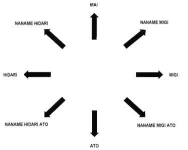

|
movement |
Tenshin-Happo
(8-Directional Movement)
The fundamental ability to apply offensive and defensive techniques in eight different directions.

References/Bibliography
- Mabuni Kenei/Nakahashi Hidetoshi. Karate-do Shito-ryu. Paris, France: SEDIREP, 1989.
- Mabuni Kenei/Kassis Con. Shito-ryu Karate-do. Victoria, Australia: Dominie Press, 1997.
- Moledzki Sam. Personal Data Archives.